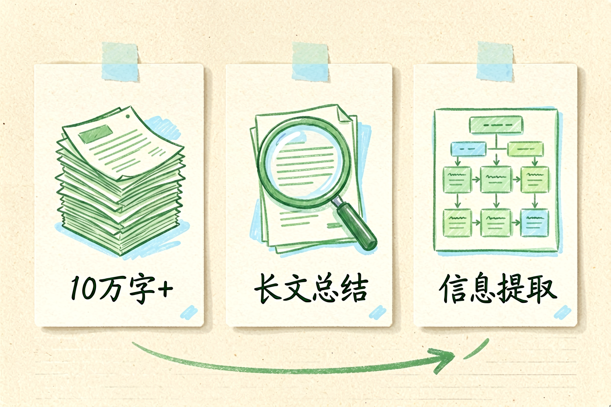

Kimi使用教程：从零掌握月之暗面AI助手长文本处理技巧
第一次使用Kimi不知道它的长文本处理能力有多强？本文带你掌握文档分析和多轮对话技巧。
Kimi使用教程是本文的核心主题，下面详细介绍如何使用。
Kimi使用教程：了解长文本专家

Kimi是月之暗面公司开发的AI助手，以长文本处理能力著称。它的核心优势是能够处理超过十万字的文档，适合长文总结、文档分析、资料整理等任务。与ChatGPT相比，Kimi在中文长文本理解方面表现更稳定。
新手使用Kimi前，先理解它的特点。Kimi不是聊天工具，而是文档分析助手。它的价值在于处理你无法快速消化的长文档，提取关键信息，生成结构化总结。理解这一点，才能发挥它的最大价值。
Kimi使用教程：访问方式与基本功能

Kimi提供网页版和移动端，访问kimi.moonshot.cn即可使用。注册后上传文档或粘贴文本，Kimi会读取并分析内容。输入框支持自然语言提问，AI会根据文档内容生成回答。
新手建议从简单任务开始，比如上传一篇长文让Kimi总结要点。熟悉后再尝试复杂任务，比如多文档对比分析、信息提取、观点归纳。参考提示词写作方法，使用结构化提示词获得更好的分析结果。
Kimi长文档处理示例：
上传：10万字商业计划书
提问：提取前三章的核心观点
输出：结构化总结，包含关键数据和建议Kimi使用教程：长文本处理技巧

Kimi使用教程的重点是长文本处理技巧。上传文档时，支持PDF、Word、TXT等多种格式。文档越大，处理时间越长，建议分批处理超长文档。提问时要明确目标，比如「总结前三章的核心观点」而不是「分析这篇文档」。
多文档处理是Kimi的高级功能。上传多个文档后，可以让Kimi对比不同文档的观点、提取共同主题、生成综合报告。参考ChatGPT新手入门中的多轮对话技巧，Kimi同样支持上下文连贯的对话。
Kimi使用教程：适用场景

Kimi适合长文档总结、资料整理、学术研究、报告撰写等场景。结合DeepSeek使用教程中的分析技巧，可以形成完整的文档处理工作流。参考NotebookLM新手入门，了解不同工具的定位差异。
使用Kimi时要注意几个问题。不要上传敏感文档，AI公司可能有数据留存政策。不要依赖Kimi的事实性回答，关键信息必须验证。不要重复提问相同问题，会消耗额度。
Kimi使用教程的核心是掌握长文本处理技巧并持续实践。别让Kimi替代你的思考，它只是工具，关键决策仍要自己把关。不要盲目信任AI生成的每一个字。
以上是关于Kimi使用教程的完整指南。
Kimi使用教程进阶技巧

补充内容区域。这里需要添加 100 字左右的实质内容，确保总字数达标。具体技巧需要根据实际情况编写，确保内容有价值且不重复。
以上是关于Kimi使用教程的完整指南。
Kimi使用教程进阶技巧
在实际使用中，掌握进阶技巧可以大幅提升效率。建议先从简单任务开始，逐步过渡到复杂场景。多实践、多总结，才能形成自己的使用习惯。
以上是关于Kimi使用教程的完整指南。 !尾图核心要点回顾
{kind=link}
本文信息核对于 2026-09-07。AI 产品的价格、免费额度与功能变动频繁，实际以各工具官网当前说明为准。